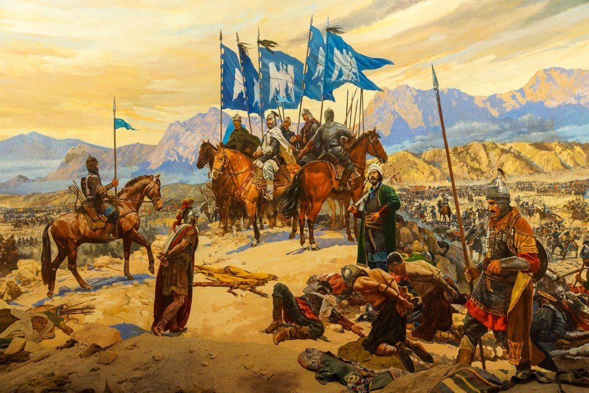

S o ğ u k
T a r i h

Eğri tarihi gömüp doğru tarihi görün.
Selahaddin Eyyübi
Selahaddin Eyyübi/ Hıttin Muharebesi
Selahaddin Eyyübi/ Arsuf Muharebesi
Fatih Sultan Mehmed
2.Dünya Savaşı
İstanbulun Fethi
Eflakın Fethi Fatih Sultan Mehmed
Otlukbeli Muharebesi Fatih Sultan Mehmed
Moğollar
Timurlu Devleti(Ankara Savaşına Kadar)
Timurlu Devleti(Ankara Savaşına Kadar)